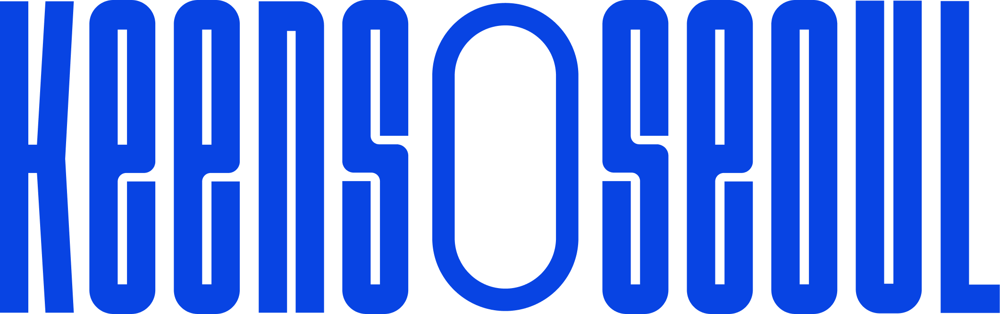
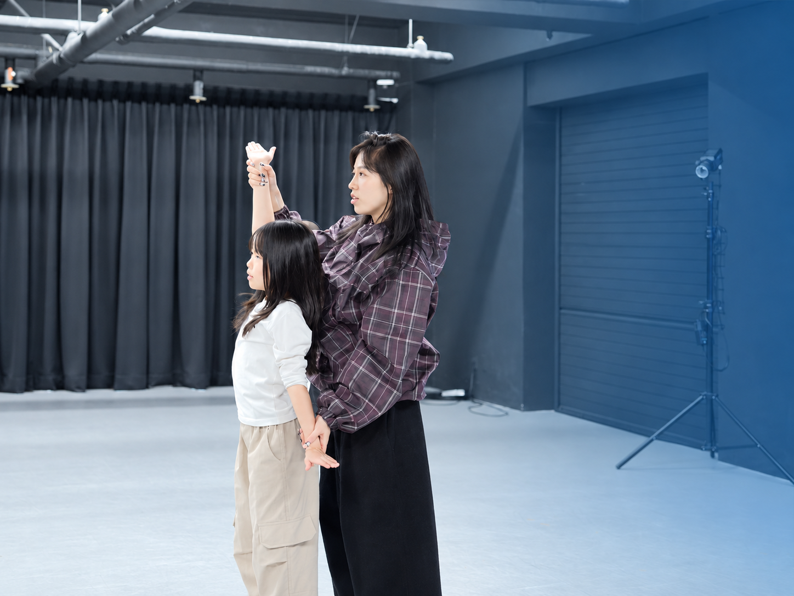
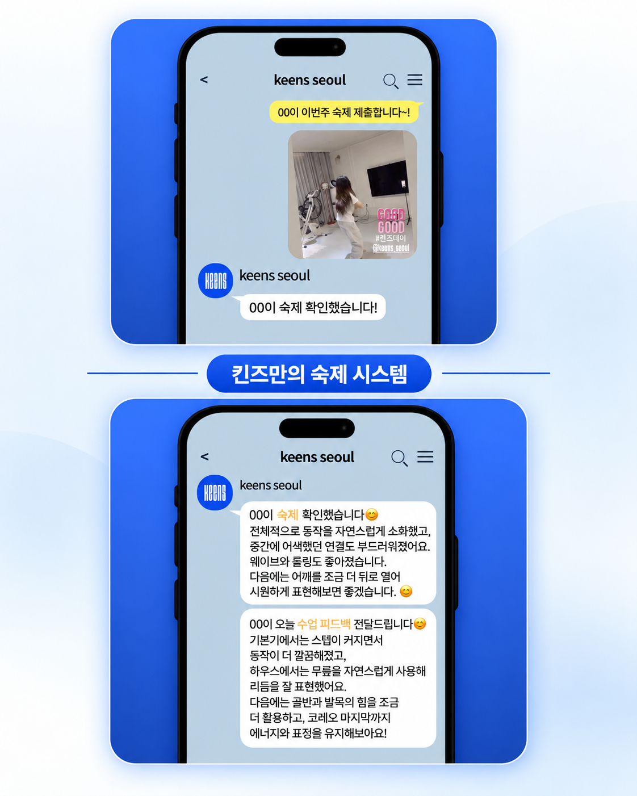

01
아이의 수준에 맞는 반이 있나요?
초보 아이가 경험 많은 아이들과 섞여 따라가기만 하지는 않는지 확인하세요.
확인 질문: 연령별·경험별 반 편성이 되어 있나요?
반 이름보다 중요한 것은 실제 수업에서 아이의 경험과 속도를 고려하는지입니다.

체크리스트 확인하기 ↓합격자수만 보고 결정하기 전에, 아이가 꾸준히 배우고 성장할 수 있는 환경인지 확인해보세요.
댄스학원 선택 기준 확인하기 ↓
학원 이름이나 예쁜 결과 영상만으로는 알기 어려운 것들이 있습니다.
궁금하거나 우리 아이에게 해당되는 고민 카드를 눌러보세요.
멋진 안무를 추는 모습보다, 우리 아이가 그 과정에서 어떻게 배우는지가 더 중요합니다.
수업을 따라가기 바빠 기본기와 자신감을 놓칠 수 있습니다.
다음 곡을 만났을 때 스스로 응용하기 어려울 수 있습니다.
무엇을 잘하고 무엇을 더 연습해야 하는지 알기 어렵습니다.
학원을 고르기 전, 아래 5가지 기준을 먼저 체크해보세요.
지금 우리 아이에게 중요한 기준을 하나씩 체크해보세요.
초보 아이가 경험 많은 아이들과 섞여 따라가기만 하지는 않는지 확인하세요.
박자·스텝·무게중심·동작의 크기처럼 춤의 기본기를 가르치는지 살펴보세요.
수업 영상이나 간단한 안내를 통해 오늘 무엇을 배웠는지 알 수 있으면 좋습니다.
잘한 점과 어려웠던 부분, 다음에 보완할 동작을 알려주는지 확인하세요.
집에서 따라 할 수 있는 연습 자료나 과제가 있는지 살펴보세요.
아이의 수업과 연습이 한 번으로 끝나지 않도록 과정을 연결합니다.

아이의 연령과 경험에 맞는 수업 기준을 가볍게 안내받아보세요.
킨즈 전문 트레이너가 아이의 연령과 경험을 바탕으로 맞춤 반을 안내해드립니다.
우리 아이 수업 기준 안내받기 →상담 신청이 아니어도 괜찮습니다. 궁금한 점만 편하게 남겨주세요.
상담 전 아래 질문을 메모해두면 우리 아이에게 맞는 학원인지 더 쉽게 비교할 수 있습니다.
아이의 현재 수준에 맞는 반이 있나요?
수업 후 아이의 성장을 어떻게 확인할 수 있나요?
수업에서 부족한 부분은 어떻게 피드백해주시나요?